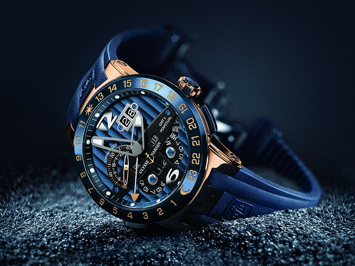

Conclusion on Technology in the watch Industryy

In conclusion, it is clear that the use of technology in modern watchmaking has both positive and negative sides. Technology has evolved and changed a lot since then, and watchmaking is not the same as it used to be. Back then, humans would manually make the watch, which would take a lot of time. Technology like mechanical advancements, quartz technology, and digital technology has improved dramatically. The use of digital technology in watchmaking has led to the birth of smartwatches.
Smartwatches are the revolutionary innovation in modern watchmaking. They are equipped with many advantageous features which can make people’s work more productive and efficient. Automation and robotics, AI-powered robots, are being used in watchmaking to make the process of manufacturing watches fast.
Despite having numerous reasons to adapt cutting-edge technology in watchmaking, there are also some considerable reasons that are harming people’s lives due to the overuse of technology in watchmaking. Environmental impact is one of the major problems that the world is facing, and what’s making it worse is the waste products and residue data produced from the watch industry, which may be toxic in nature, such as lead and carbon. These cause serious environmental hazards if not disposed of properly. Because of these, humans may have to face serious consequences.
Overall, the use of technology in watchmaking has so many advantages that it provides human efficiency and productivity. If its environmental impact is reduced, then the growth of the watch industry will escalate.